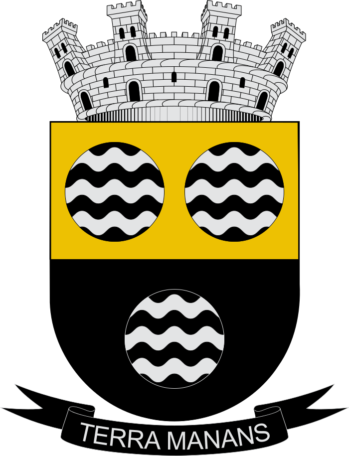
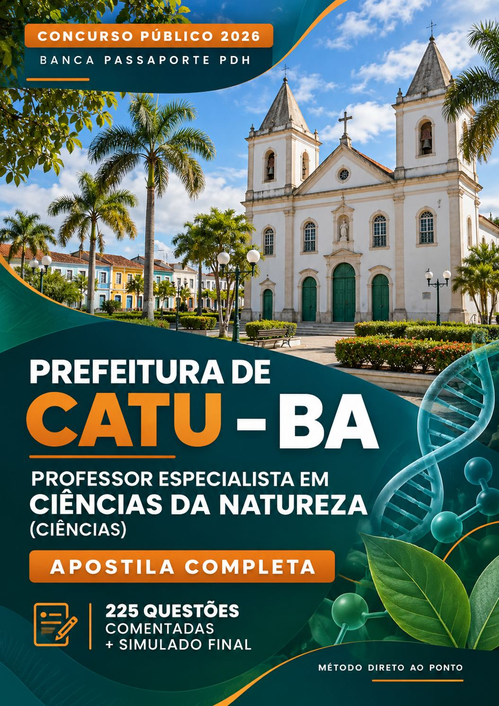

NÍVEL MÉDIO · TRÂNSITO
Agente de Trânsito
Língua Portuguesa, Matemática e Legislação de Trânsito, com questões comentadas, simulado final e guia do TAF.
PDF digital · R$ 19,90
Comprar agora ↗
Teoria, questões comentadas e simulado em PDF. Encontre a apostila da sua área e confira páginas reais antes de comprar.
Cada apostila por R$ 19,90Pagamento único · uma apostila por compra · PDF digital
Encontrar a apostila do meu cargo ↗Material independente, sem vínculo com a Prefeitura de Catu ou a Passaporte PDH.
Material digital em PDF · Estudo no seu ritmo

Escolha a área e o cargo da sua inscrição. Cada oferta custa R$ 19,90 e corresponde a uma apostila, não à coleção inteira.
A seleção mostra os conteúdos, a capa e as amostras do material escolhido.
R$ 19,90
Comprar esta apostila ↗Pagamento processado pela Wiapy. Confira o produto e o valor total antes de pagar. Não há envio físico.
Ver páginas reais da apostila ↓Atenção à retificação de 29/10/2026: o concurso teve alterações no conteúdo de Séries Iniciais e na estrutura das provas, incluindo redação. As amostras mostram os arquivos disponíveis; não anunciamos revisão integral dos PDFs por essa retificação. Consulte o aviso do material selecionado e o edital atualizado.
Confira a linguagem, a organização e o nível de detalhamento nas páginas extraídas do PDF. Toque na imagem para ampliar.
Comprar esta apostila · R$ 19,90 ↗Há 17 opções por cargo e uma formação comum em Pedagogia. Ela compartilha conteúdos com as apostilas de Educação Infantil, Anos Iniciais e Coordenação. Para uma dessas inscrições, priorize a apostila do cargo; não é necessário comprar os dois materiais para obter a mesma base.
Língua Portuguesa, Matemática e Legislação de Trânsito, com questões comentadas, simulado final e guia do TAF.
Alfabetização, ensino e aprendizagem nos anos iniciais.
Administração Pública, protocolo, arquivo, almoxarifado, atendimento, redação oficial e LGPD.
Educação inclusiva, acessibilidade e atendimento especializado.
Biologia, Química, Física, Terra e legislação da educação.
Gestão pedagógica, currículo, planejamento e avaliação.
Tecnologias, cultura digital e educação.
Cultura corporal, práticas e ensino de Educação Física.
Desenvolvimento infantil, práticas pedagógicas e educação da infância.
Língua Portuguesa, Matemática e conhecimentos específicos de fiscalização ambiental, com questões comentadas e simulado final.
Espaço geográfico, sociedade, natureza e ensino de Geografia.
Conhecimentos específicos de História e ensino da disciplina.
Conhecimentos específicos e ensino de Língua Inglesa.
Linguagem, literatura e ensino de Língua Portuguesa.
Conhecimentos específicos e ensino de Matemática.
Formação comum com conteúdos compartilhados com Educação Infantil, Anos Iniciais e Coordenação. Não é um cargo separado.
Psicologia, desenvolvimento e aprendizagem no contexto escolar.
Nenhum material encontrado. Tente outro termo ou altere o filtro.
R$ 19,90 por apostila. O número de páginas inclui capa e apresentação. Abra os detalhes para consultar as amostras e os avisos da versão disponível.
Encontre o material da sua área sem se perder entre apostilas de outros cargos.
Use o formato digital para organizar os estudos e retomar o conteúdo onde estiver.
Confira a capa, os conteúdos, a quantidade de páginas e os recursos incluídos antes de escolher seu material.
A preparação começa com uma escolha bem feita.
Use os filtros ou a busca e confira a capa, o número de páginas e os recursos de cada material.
Confira o conteúdo da apostila e as condições de pagamento e acesso no checkout da Wiapy.
Distribua o tempo entre conteúdo, revisão e exercícios, acompanhando o edital do concurso.
As apostilas de Educação Infantil, Anos Iniciais e Coordenação já apresentam uma base de Pedagogia e um capítulo específico do cargo. A formação comum compartilha essa base. Para essas inscrições, priorize o material do cargo; comprar os dois para obter a mesma base é desnecessário.
Esta página não anuncia revisão integral dos PDFs pela retificação. Consulte o documento oficial para regras, datas e pesos de prova. Assistente Administrativo, Fiscal de Meio Ambiente e Psicologia Educacional não incluem preparação específica para redação na versão apresentada.
Escreva para edurecorta@gmail.com com o número do pedido. Consulte as condições de compra no rodapé. O direito de arrependimento das compras à distância é de 7 dias, conforme o art. 49 do Código de Defesa do Consumidor.
Não. A proposta é de materiais digitais em PDF, para leitura no celular, tablet ou computador. A impressão pode ser feita por sua conta.
Sim. Cada apostila custa R$ 19,90. Escolha o material do seu cargo e clique em “Comprar agora” para concluir a compra no checkout da Wiapy.
Os conteúdos variam conforme o material: base de conhecimentos, parte específica, questões comentadas e simulado final de 25 questões. As apostilas docentes, de Pedagogia e de Coordenação incluem preparação para redação. Os arquivos de Assistente Administrativo, Fiscal de Meio Ambiente e Psicologia Educacional não incluem preparação específica para redação; essa etapa exige estudo complementar. Confira as amostras e os avisos da versão disponível.
Após a confirmação do pagamento, siga as instruções de acesso apresentadas pela Wiapy e enviadas ao e-mail da compra. Confira também a caixa de spam. O prazo depende da confirmação do meio de pagamento. Se não localizar o acesso, escreva para edurecorta@gmail.com com o número do pedido.
Não. O Método Direto ao Ponto é uma iniciativa independente de preparação, sem vínculo com a Prefeitura de Catu ou com a Passaporte PDH.
Acompanhe os comunicados e retificações no site da banca Passaporte PDH. As datas apresentadas aqui são as previstas no edital fornecido e podem sofrer alterações.
Encontre a apostila para a sua próxima etapa.